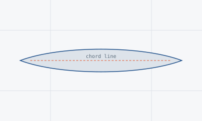

← Back to projects
Competition · 2024 – 2025
AIAA Design Build Fly Competition
Aerodynamics
Design Team
Technical Documentation

Overview
The AIAA Design Build Fly (DBF) competition challenges university teams to design,
build, and fly a radio-controlled aircraft that meets a specific mission profile under
strict rules on weight, dimensions, and performance. As a member of the design team,
the work centered on the aerodynamic analysis behind the aircraft's configuration.
Approach
- Collaborated with a multidisciplinary team — spanning aerodynamics, structures, and propulsion — to deliver a cohesive aircraft design under competition constraints.
- Contributed aerodynamic analysis to inform key design decisions across the aircraft's configuration.
- Produced technical documentation to support design reviews and competition submission requirements.
- Took part in project planning to keep the team's design work aligned with competition milestones and deadlines.
Role
Design Team Member, working alongside teammates across disciplines to move the aircraft
from concept through a competition-ready design, with a focus on aerodynamic
analysis and documentation.